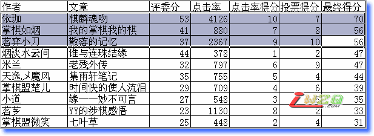
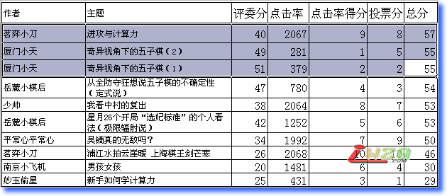

爱五子棋网首届原创首发征文比赛评比结果
首页
原创征文
#1 <font color="Teal">爱五子棋网首届原创首发征文比赛评比结果</font> 作者：有志青年 发表时间：2009-5-14 21:41:14
最终获得大奖的文章：
文学类
依珈 棋麟魂殇
掌棋如烟 我的掌棋我的棋
茗弈小刀 散 落 的 记 忆
具体打分见下表：

学术类
茗弈小刀 进攻与计算力
厦门小天 奇异视角下的五子棋（2）
厦门小天 奇异视角下的五子棋（1）
具体打分见下表：

#2 Re:爱五子棋网首届原创首发征文比赛评比结果 作者：潇洒 发表时间：2009-5-14 22:09:50
祝贺依珈 如烟 小刀 小天获奖
#3 Re:爱五子棋网首届原创首发征文比赛评比结果 作者：有志青年 发表时间：2009-5-14 22:11:20
近期将统计并在此帖中发布参赛人员qq，并会尽快发放奖励。
在此，感谢所有评委，呵呵，评委同志们就做一下义务工咯。希望下次这样的活动还能不辞辛苦继续为我们做义务工。
并要感谢所有参赛选手，是你们给了大家学习的机会，很多优秀的文章是被逼出来的。名次是次要的，重要的是您的文章留给了大家深刻的印象。重在参与！
最后要感谢所有的网友，感谢你们的支持，没有你们，谁会写文章呢？那叫日记了。
#4 Re:爱五子棋网首届原创首发征文比赛评比结果 作者：丹尼 发表时间：2009-5-14 22:11:26
恭喜！！~~
#5 Re:爱五子棋网首届原创首发征文比赛评比结果 作者：屏蔽 发表时间：2009-5-14 23:07:42
恭喜嗯~
#6 Re:爱五子棋网首届原创首发征文比赛评比结果 作者：南京小飞机 发表时间：2009-5-14 23:09:24
评委分最低
#7 Re:爱五子棋网首届原创首发征文比赛评比结果 作者：梦婷 发表时间：2009-5-14 23:23:38
祝贺 获奖选手！~~感谢所有参赛选手，是你们给了大家学习的机会！
#8 Re:爱五子棋网首届原创首发征文比赛评比结果 作者：团子 发表时间：2009-5-15 1:01:49
《老残外传》榜上无名,出乎预料 . . .

#9 Re:爱五子棋网首届原创首发征文比赛评比结果 作者：冷酒一杯 发表时间：2009-5-15 10:10:57
祝贺小刀荣获大奖
#10 Re:爱五子棋网首届原创首发征文比赛评比结果 作者：茗弈小刀 发表时间：2009-5-15 10:11:18
深深感谢爱五子棋网，感谢有志大哥带头有方，感谢评委老师辛苦了，最最感谢的是大家这么热爱这个网站。对于这次比赛，其实有很多文章从我个人来说比我的好，所以能得到这个名次实乃承蒙大家厚爱。以后希望举办更多类似比赛，让大家得到锻炼，但以后的比赛我只参与，不进入评比，把更多机会留给大家和一些新朋友们！祝我们爱五子棋网再接再励，创造更多精彩！
#11 Re:爱五子棋网首届原创首发征文比赛评比结果 作者：忧郁的双眼 发表时间：2009-5-15 12:01:25
围观侄女~
#12 Re:爱五子棋网首届原创首发征文比赛评比结果 作者：花月痕 发表时间：2009-5-15 20:34:28
对于结果很无语~
#13 Re:爱五子棋网首届原创首发征文比赛评比结果 作者：浩瀚铭剑 发表时间：2009-5-16 12:45:11
对于结果很无语~
 我也感觉撒
我也感觉撒
#14 Re:爱五子棋网首届原创首发征文比赛评比结果 作者：落落欲往 发表时间：2009-5-16 13:07:48
自古文无第一,或者评委老师有我等不能理解的眼光吧.
［ 忧郁的双眼 于 2009-5-16 13:59:50 时花20金币送鲜花一朵］
#15 Re:爱五子棋网首届原创首发征文比赛评比结果 作者：灿灿就是灿灿 发表时间：2009-5-16 15:16:33
逍遥 加油！！！！！！！！！！！！！！！！！！！！！！！！！！！！！！
#16 Re:爱五子棋网首届原创首发征文比赛评比结果 作者：至善若何 发表时间：2009-5-20 9:47:45
哥哥是文学类第一，真好，哥哥加油!
#17 Re:爱五子棋网首届原创首发征文比赛评比结果 作者：雅匪 发表时间：2009-5-26 0:39:00
这是一次成功的比赛
因为它的过程非常成功
这是一次失败的比赛
因为它的结果非常失败
（也许结果不重要 结果的失败也不一定不能抹杀过程的成功 但可以肯定的是结果必将影响接下来的过程）
#18 Re:爱五子棋网首届原创首发征文比赛评比结果 作者：萧予 发表时间：2009-5-31 1:36:39
祝贺各位获奖